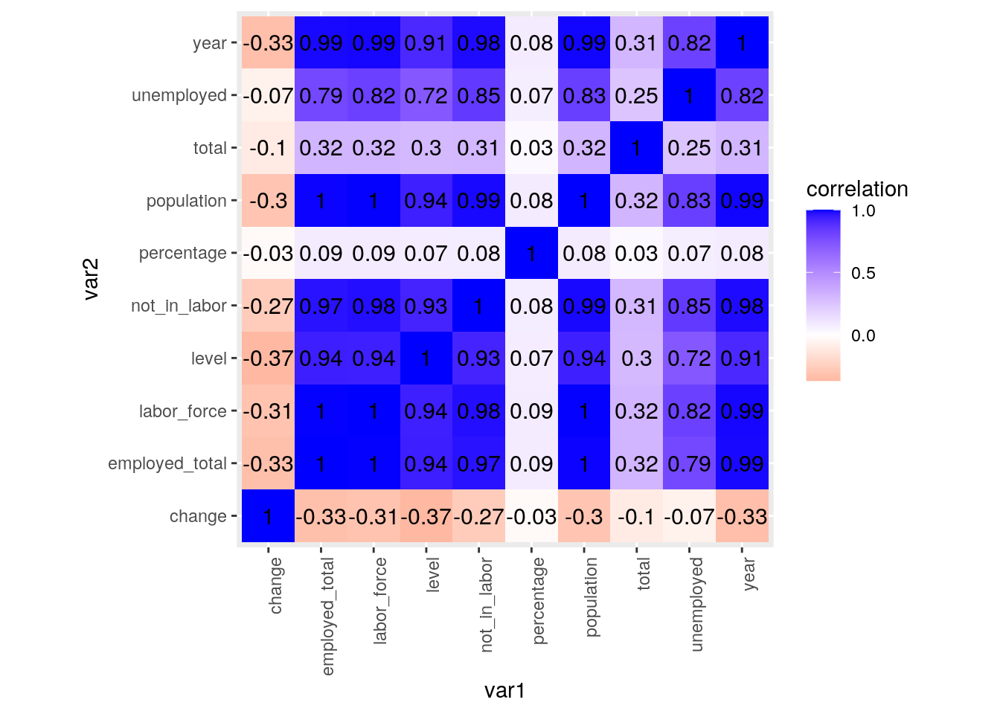
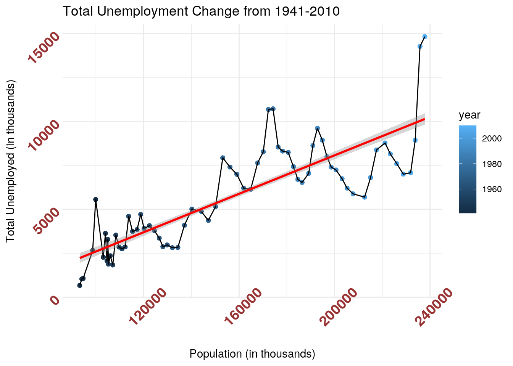
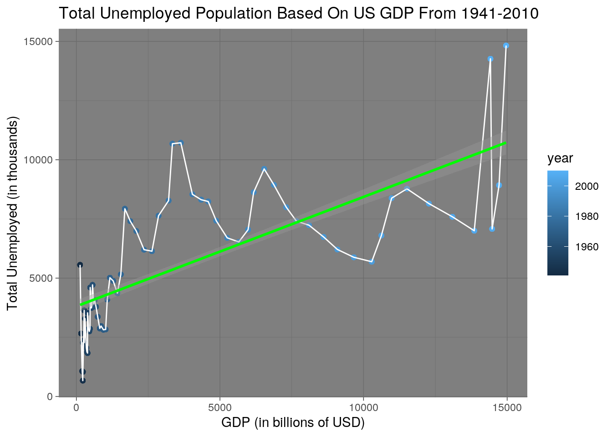
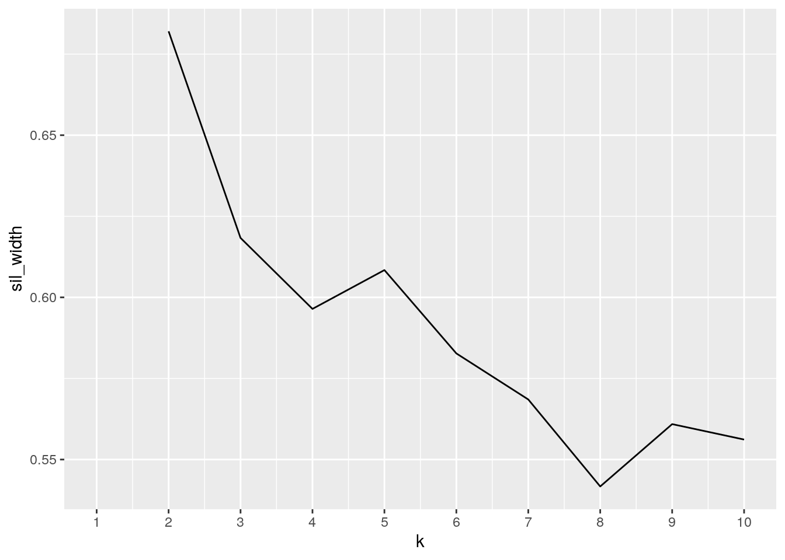
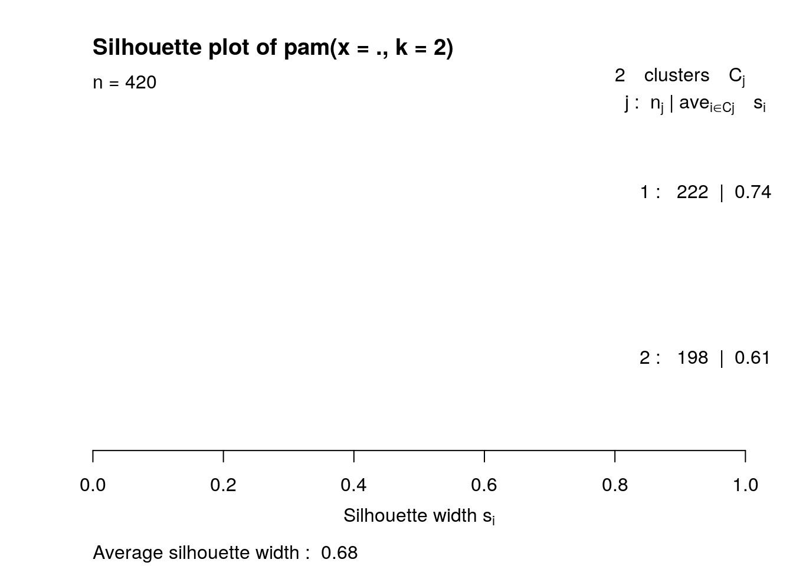
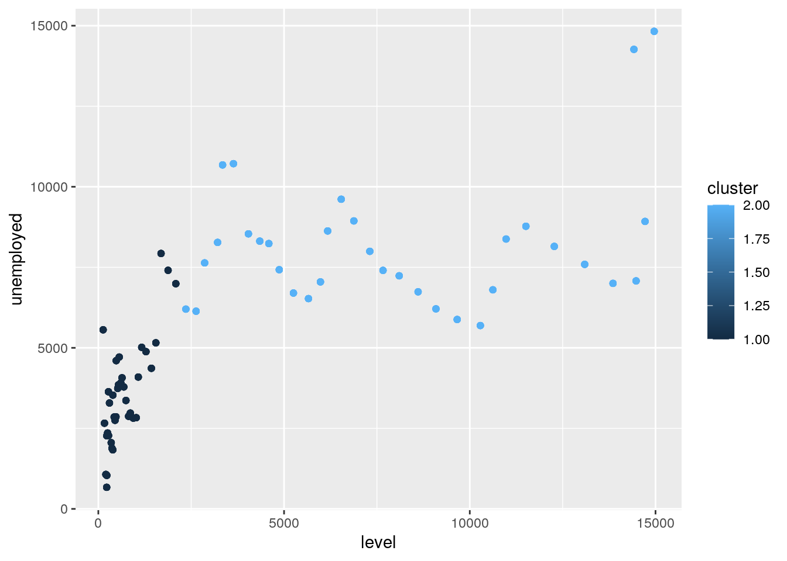
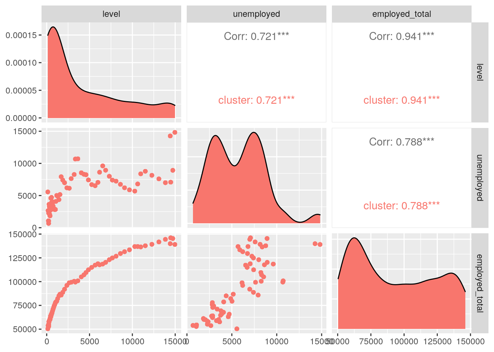

I chosen my two data sets, titled “gdp” and “unemployed”, because I wanted to see if there was a relationship between US GDP level, employment, and unemployment rates in the United States during the years 1941-2010. The “gdp” data set contains the year, the GDP in billions of current dollars, the DGP in billions of chained 2009 dollars, the GDP percent change based on current dollars, and the GDP percent change based on chained 2009 dollars. The “unemployed” data set contains the year, population, the number of people in the labor force, the percentage of the population in the labor force, the total number of employed people, the percentage of employed people, the ratio of people in agriculture and the people not working in agriculture, the total number of unemployed people, the percentage of unemployed people, and finally the number of people not in the labor force. All of these values are measured in thousands. There is also a footnotes column with a predominant amount of ‘NAs’ or ‘1s’ that I will not include in my analysis. (Data set sources: https://datahub.io/core/gdp-us#readme and https://datahub.io/core/employment-us.)
library(dplyr)
library(tidyverse)
aat1_csv <- read.csv("aat1_csv.csv")
unemployed <- aat1_csv
glimpse(unemployed)## Rows: 71
## Columns: 12
## $ year <int> 1941, 1942, 1943, 1944, 1945, 1946, 1947, 1947, …
## $ population <int> 99900, 98640, 94640, 93220, 94090, 103070, 10601…
## $ labor_force <int> 55910, 56410, 55540, 54630, 53860, 57520, 60168,…
## $ population_percent <dbl> 56.0, 57.2, 58.7, 58.6, 57.2, 55.8, 56.8, 58.3, …
## $ employed_total <int> 50350, 53750, 54470, 53960, 52820, 55250, 57812,…
## $ employed_percent <dbl> 50.4, 54.5, 57.6, 57.9, 56.1, 53.6, 54.5, 56.0, …
## $ agrictulture_ratio <int> 9100, 9250, 9080, 8950, 8580, 8320, 8256, 7890, …
## $ nonagriculture_ratio <int> 41250, 44500, 45390, 45010, 44240, 46930, 49557,…
## $ unemployed <int> 5560, 2660, 1070, 670, 1040, 2270, 2356, 2311, 2…
## $ unemployed_percent <dbl> 9.9, 4.7, 1.9, 1.2, 1.9, 3.9, 3.9, 3.9, 3.8, 5.9…
## $ not_in_labor <int> 43990, 42230, 39100, 38590, 40230, 45550, 45850,…
## $ footnotes <int> NA, NA, NA, NA, NA, NA, NA, NA, NA, NA, NA, NA, …unemployed <- unemployed[-c(8), ]
year_csv <- read.csv("year_csv.csv")
gdp <- year_csv
glimpse(gdp)## Rows: 86
## Columns: 5
## $ date <int> 1930, 1931, 1932, 1933, 1934, 1935, 1936, 1937, 1938, …
## $ level.current <dbl> 92.2, 77.4, 59.5, 57.2, 66.8, 74.3, 84.9, 93.0, 87.4, …
## $ level.chained <dbl> 966.7, 904.8, 788.2, 778.3, 862.2, 939.0, 1060.5, 1114…
## $ change.current <dbl> -16.0, -23.1, -4.0, 16.9, 11.1, 14.3, 9.6, -6.1, 7.0, …
## $ change.chained <dbl> -6.4, -12.9, -1.3, 10.8, 8.9, 12.9, 5.1, -3.3, 8.0, 8.…tidiergdp <- gdp %>% pivot_longer(contains(".")) %>% separate(name,
into = c("GDP", "history")) %>% pivot_wider(names_from = "GDP",
values_from = "value") %>% rename(dollar_type = "history") %>%
filter(dollar_type != "chained")
glimpse(tidiergdp)## Rows: 86
## Columns: 4
## $ date <int> 1930, 1931, 1932, 1933, 1934, 1935, 1936, 1937, 1938, 193…
## $ dollar_type <chr> "current", "current", "current", "current", "current", "c…
## $ level <dbl> 92.2, 77.4, 59.5, 57.2, 66.8, 74.3, 84.9, 93.0, 87.4, 93.…
## $ change <dbl> -16.0, -23.1, -4.0, 16.9, 11.1, 14.3, 9.6, -6.1, 7.0, 10.…newunemployed <- unemployed %>% pivot_longer(contains("_percent")) %>%
separate(name, into = c("category", "percent")) %>% rename(percentage = "value") %>%
pivot_longer(contains("_ratio")) %>% separate(name, into = c("agricultural_type",
"ratio")) %>% rename(total = "value")
newunemployed$footnotes <- NULL
newunemployed$percent <- NULL
newunemployed$ratio <- NULL
glimpse(newunemployed)## Rows: 420
## Columns: 10
## $ year <int> 1941, 1941, 1941, 1941, 1941, 1941, 1942, 1942, 194…
## $ population <int> 99900, 99900, 99900, 99900, 99900, 99900, 98640, 98…
## $ labor_force <int> 55910, 55910, 55910, 55910, 55910, 55910, 56410, 56…
## $ employed_total <int> 50350, 50350, 50350, 50350, 50350, 50350, 53750, 53…
## $ unemployed <int> 5560, 5560, 5560, 5560, 5560, 5560, 2660, 2660, 266…
## $ not_in_labor <int> 43990, 43990, 43990, 43990, 43990, 43990, 42230, 42…
## $ category <chr> "population", "population", "employed", "employed",…
## $ percentage <dbl> 56.0, 56.0, 50.4, 50.4, 9.9, 9.9, 57.2, 57.2, 54.5,…
## $ agricultural_type <chr> "agrictulture", "nonagriculture", "agrictulture", "…
## $ total <int> 9100, 41250, 9100, 41250, 9100, 41250, 9250, 44500,…The first data set I cleaned was the gdp data set. In order to tidy this, I pivoted longer the two types of dollars that were in the data set (current and chained) and organized those as “history” and then organized the two GDP analyses (level and change) as “GDP”. I then pivoted the two GDP types wider and kept the values with the GDP types, resulting in a final, tidy data set. Then, analyzing the unemployed dataset, I pivoted the column that contained a percentage longer and separated them into a category that contained the population, employed, and unemployed percentages and renamed the second category percent, which just categorically described each of those values as a percentage (aka, all this column now said was “percent” for every row). I renamed the column of values for each category to “percentage” and deleted the column “percent” from the overall data set, since I had clarified that the values were the percentages. I repeated this process and pivoted longer all of the columns that contained a ratio and separated them based on agricultural type and ratio, which again just categorically said “ratio” for each row. I renamed the subsequent value column into “total” and deleted the column “ratio” from the overall data set. I did have to remove some observations to make analysis easier; in my original unemployed data set, I removed a duplicate 1947 year observation and in the tidiergdp data set, I removed all dollar_types that are “chained” (explained in more detail below). Finally, I also deleted the column titled “footnotes”, since this contained mostly NAs and does not pertain to any of my analysis.
totaldata <- tidiergdp %>% inner_join(newunemployed, by = c(date = "year")) %>%
rename(year = "date")
totaldatasummary <- totaldata %>% group_by(year) %>% summarize(count = n())
glimpse(totaldatasummary)## Rows: 70
## Columns: 2
## $ year <int> 1941, 1942, 1943, 1944, 1945, 1946, 1947, 1948, 1949, 1950, 195…
## $ count <int> 6, 6, 6, 6, 6, 6, 6, 6, 6, 6, 6, 6, 6, 6, 6, 6, 6, 6, 6, 6, 6, …I chose to use an inner join instead of full join because the earliest year in the gdp data set is 1930, but the unemployed data set starts in the year 1941, so inner join will join both from 1941 on, while with full join I would have to omit the rows with NA, which would be an unnecessary extra step. One case was dropped from my data set (which was 12 rows total). In my original unemployed data set, there are two rows of data for the year 1947. This data set was created from information publicly posted by the Bureau of Labor Statistics from two different data sets; the first data set contained information from the years 1940-1947, and the second data set contained info from the years 1947-2020, but the information for 1947 in each data set did not match one another. I attempted to find out which set of data was accurate to no avail, so I dropped the second row of 1947 values, since I hypothesized that the were recorded second and there was a secretarial error. I removed the row before tidying the original unemployment data set and before joining my two sets to keep everything more organized. Keeping the second 1947 row would not make sense because I would find conflicting analyses, since years 1947 essentially contains two different sets of data. Furthermore, I also deleted all observations that contained “chained” as a dollar type because this is a measure of inflation that I’m not looking to analyze in my total data set and the values of “current” versus “chained” dollar types significantly vary across columns, which would skew any statistical analysis I conduct (such as mean or sd). Since the original unemployment data set had many columns that could be tidied into one another, each year in my joined totaldata data set has 12 observations.
totaldata %>% group_by(category) %>% summarize(median_percentage = median(percentage))## # A tibble: 3 x 2
## category median_percentage
## <chr> <dbl>
## 1 employed 57.8
## 2 population 61.4
## 3 unemployed 5.5totaldata %>% group_by(category) %>% summarize(sd_percentage = sd(percentage))## # A tibble: 3 x 2
## category sd_percentage
## <chr> <dbl>
## 1 employed 3.13
## 2 population 3.49
## 3 unemployed 1.81totaldata %>% summarize(mean = mean(population))## # A tibble: 1 x 1
## mean
## <dbl>
## 1 157050.totaldata %>% summarize(min(unemployed))## # A tibble: 1 x 1
## `min(unemployed)`
## <int>
## 1 670totaldata %>% summarize(max(employed_total))## # A tibble: 1 x 1
## `max(employed_total)`
## <int>
## 1 146047totaldata %>% summarize(mean = mean(level))## # A tibble: 1 x 1
## mean
## <dbl>
## 1 4139.totaldata %>% summarize(min(change))## # A tibble: 1 x 1
## `min(change)`
## <dbl>
## 1 -2totaldata %>% summarize(max(labor_force))## # A tibble: 1 x 1
## `max(labor_force)`
## <int>
## 1 154287totaldata %>% summarize(mean = mean(not_in_labor))## # A tibble: 1 x 1
## mean
## <dbl>
## 1 57780.totaldata %>% summarize(min(change))## # A tibble: 1 x 1
## `min(change)`
## <dbl>
## 1 -2totaldata %>% summarize(max(total))## # A tibble: 1 x 1
## `max(total)`
## <int>
## 1 143952totaldata %>% select(Year = year, `Total GDP` = level, `Total Unemployed` = unemployed)## # A tibble: 420 x 3
## Year `Total GDP` `Total Unemployed`
## <int> <dbl> <int>
## 1 1941 129. 5560
## 2 1941 129. 5560
## 3 1941 129. 5560
## 4 1941 129. 5560
## 5 1941 129. 5560
## 6 1941 129. 5560
## 7 1942 166 2660
## 8 1942 166 2660
## 9 1942 166 2660
## 10 1942 166 2660
## # … with 410 more rowstotaldata %>% filter(year == 1955) %>% select(category, percentage) %>%
arrange(desc(percentage))## # A tibble: 6 x 2
## category percentage
## <chr> <dbl>
## 1 population 59.3
## 2 population 59.3
## 3 employed 56.7
## 4 employed 56.7
## 5 unemployed 4.4
## 6 unemployed 4.4totaldata %>% group_by(year) %>% select(employed_total, unemployed) %>%
mutate(ratio = employed_total/unemployed) %>% arrange(desc(ratio))## # A tibble: 420 x 4
## # Groups: year [70]
## year employed_total unemployed ratio
## <int> <int> <int> <dbl>
## 1 1944 53960 670 80.5
## 2 1944 53960 670 80.5
## 3 1944 53960 670 80.5
## 4 1944 53960 670 80.5
## 5 1944 53960 670 80.5
## 6 1944 53960 670 80.5
## 7 1943 54470 1070 50.9
## 8 1943 54470 1070 50.9
## 9 1943 54470 1070 50.9
## 10 1943 54470 1070 50.9
## # … with 410 more rowstotaldata %>% group_by(year) %>% select(population, unemployed) %>%
mutate(ratio2 = population/unemployed) %>% arrange(-desc(ratio2))## # A tibble: 420 x 4
## # Groups: year [70]
## year population unemployed ratio2
## <int> <int> <int> <dbl>
## 1 2010 237830 14825 16.0
## 2 2010 237830 14825 16.0
## 3 2010 237830 14825 16.0
## 4 2010 237830 14825 16.0
## 5 2010 237830 14825 16.0
## 6 2010 237830 14825 16.0
## 7 1982 172271 10678 16.1
## 8 1982 172271 10678 16.1
## 9 1982 172271 10678 16.1
## 10 1982 172271 10678 16.1
## # … with 410 more rowstotaldata %>% group_by(year) %>% select(level, unemployed) %>%
mutate(ratio3 = unemployed/level) %>% arrange(-desc(ratio3))## # A tibble: 420 x 4
## # Groups: year [70]
## year level unemployed ratio3
## <int> <dbl> <int> <dbl>
## 1 2007 14478. 7078 0.489
## 2 2007 14478. 7078 0.489
## 3 2007 14478. 7078 0.489
## 4 2007 14478. 7078 0.489
## 5 2007 14478. 7078 0.489
## 6 2007 14478. 7078 0.489
## 7 2006 13856. 7001 0.505
## 8 2006 13856. 7001 0.505
## 9 2006 13856. 7001 0.505
## 10 2006 13856. 7001 0.505
## # … with 410 more rowsThe most interesting results of my data come from using mutate and finding the ratio of the total unemployed number of people to total GDP, total population, or total employed number of people for each year. A larger ratio of total employed to total unemployed is ideal because this means there are less people who are unemployed compared to the total employed population. The years with the highest and lowest ratios were 1944 (ratio = 80.537) and 1941 (ratio = 9.056), respectively. What is interesting about these findings are that the maximum and minimum ratios are within the same decade, and that the 1940s clearly saw a massive unemployment growth between 1941 and 1944. This likely has to do with the US’ involvement in World War 2. A larger ratio of total population to unemployed people is also ideal because this means there are less people who are unemployed compared to the overall total population. The years with the highest and lowest ratios were 1944 (ratio2 = 139.134) and 2010 (16.042), respectively. It is interesting that the lowest ratio of unemployment was in 2010, because this was right after the stock market crash in 2008, which left many people unemployed. Finally, a larger ratio of unemployed people to the level of total GDP is not ideal because this means there are more unemployed people per billion US GDP. The years with the highest and lowest ratios were 1941 (ratio3 = 42.967) and 2007 (0.489), respectively. 2007 was the year before the housing crisis/stock market crash, showing that the US had the most stable and ideal ratio of unemployment to GDP level right before this crisis. Furthermore, the US had the greatest ratio of unemployment to GDP at the start of WW2, implying that the war had a major effect on reducing US GDP and increasing the umeployment total. Overall, the unemployment trends that are depicted in my mutation of ratios follow major global and societal events in the US, and it is interesting to correlate these major US events to unemployment rates.
library(tidyverse)
cormat <- totaldata %>% select_if(is.numeric) %>% cor(use = "pair")
cormat## year level change population labor_force
## year 1.00000000 0.91021524 -0.33417464 0.99244431 0.98978500
## level 0.91021524 1.00000000 -0.36760976 0.93876614 0.93764347
## change -0.33417464 -0.36760976 1.00000000 -0.30087152 -0.31115940
## population 0.99244431 0.93876614 -0.30087152 1.00000000 0.99844015
## labor_force 0.98978500 0.93764347 -0.31115940 0.99844015 1.00000000
## employed_total 0.98771834 0.94085498 -0.32853258 0.99578542 0.99851322
## unemployed 0.81832218 0.72097707 -0.06819340 0.83145356 0.82045685
## not_in_labor 0.98308316 0.92596689 -0.26658674 0.98739327 0.97701557
## percentage 0.08487064 0.07422628 -0.02567812 0.08488618 0.08601444
## total 0.31453954 0.29961606 -0.10462125 0.31710867 0.31797732
## employed_total unemployed not_in_labor percentage total
## year 0.9877183 0.81832218 0.98308316 0.08487064 0.31453954
## level 0.9408550 0.72097707 0.92596689 0.07422628 0.29961606
## change -0.3285326 -0.06819340 -0.26658674 -0.02567812 -0.10462125
## population 0.9957854 0.83145356 0.98739327 0.08488618 0.31710867
## labor_force 0.9985132 0.82045685 0.97701557 0.08601444 0.31797732
## employed_total 1.0000000 0.78807317 0.97109535 0.08569010 0.31845074
## unemployed 0.7880732 1.00000000 0.84846583 0.07263107 0.25096301
## not_in_labor 0.9710954 0.84846583 1.00000000 0.08024176 0.30924615
## percentage 0.0856901 0.07263107 0.08024176 1.00000000 0.02728807
## total 0.3184507 0.25096301 0.30924615 0.02728807 1.00000000heatmaptotaldata <- cormat %>% as.data.frame %>% rownames_to_column("var1") %>%
pivot_longer(-1, names_to = "var2", values_to = "correlation")
glimpse(heatmaptotaldata)## Rows: 100
## Columns: 3
## $ var1 <chr> "year", "year", "year", "year", "year", "year", "year", "…
## $ var2 <chr> "year", "level", "change", "population", "labor_force", "…
## $ correlation <dbl> 1.00000000, 0.91021524, -0.33417464, 0.99244431, 0.989785…heatmaptotaldata %>% ggplot(aes(var1, var2, fill = correlation)) +
geom_tile() + scale_fill_gradient2(low = "red", mid = "white",
high = "blue") + geom_text(aes(label = round(correlation,
2)), color = "black", size = 4) + theme(axis.text.x = element_text(angle = 90,
hjust = 1)) + coord_fixed()
plot1 <- ggplot(totaldata, aes(population, unemployed, fill = year)) +
geom_point(aes(color = year)) + geom_line() + geom_smooth(method = "lm",
color = "red") + theme_minimal() + theme(legend.position = "right",
axis.text.x = element_text(face = "bold", color = "#993333",
size = 14, angle = 45), axis.text.y = element_text(face = "bold",
color = "#993333", size = 14, angle = 45))
plot1 + ggtitle("Total Unemployment Change from 1941-2010") +
ylab("Total Unemployed (in thousands)") + xlab("Population (in thousands)")
plot2 <- ggplot(totaldata, aes(level, unemployed)) + geom_point(aes(color = year)) +
theme_dark() + theme(legend.position = "right") + geom_line(aes(x = level,
y = unemployed), colour = "white") + geom_smooth(method = "lm",
color = "green")
plot2 + ggtitle("Total Unemployed Population Based On US GDP From 1941-2010") +
ylab("Total Unemployed (in thousands)") + xlab("GDP (in billions of USD)") Plot1 describes the relationship between the total population each year between 1941 and 2020 and the total number of unemployed people (both in thousands). Based on this graph, I found that as the population of the US increases with each year, so does the total number of unemployed people. The graph shows a clear upward linear trend, although the data is not very linear; instead, the graph is peppered with peaks and troughs. The peaks describe years where there were higher unemployment rates than usual (usual being the red line of regression) compared to the total US population during that time. The troughs describe years where the unemployment rates were lower than usual, and most likely represent a period of economic prosperity for US a higher increase in job opportunities. Plot 2 compares the relationship of the increase in GDP of the US during those same years and the total number of unemployed people during each year. Although this graph also does not show a clear linear relationship, there is less highs and lows across each year, meaning the change in the relationship between GDP and the total number of unemployed people in the US each year remains more stable than the relationship between the total population and total unemployed people. The troughs describe years where the US had a lower number of unemployed people than usual (usual being the green regression line, representing the average relationship of the two variables) and the peaks represent years where there were higher unemployment totals compared to GDP than usual. It is interesting to see that the years 1974-1995 (approximately) were characterized by overall higher unemployment totals compared to the GDP, which was then followed by the years 1995-2009 which were characterized by lower unemployment totals compared to GDP and overall higher economic prosperity. An interesting future analysis would be to compare what major events were happening in each decade to see how this correlates to the trends between each variable. For example, the years 1996-1999 show the lowest unemployment totals compared to GDP in recent years, so it would be interesting to analyze what societal factors could be causing this relationship. This goes for the inverse as well; the year 2020 has the highest unemployment total in the entire data set and I would love to evaluate what societal or political factors also could have caused this. One conclusion I noticed was the spike between 2008 and 2009 in unemployment; this is likely due to the economic crash that the US faced in 2008, which ended a period of low unemployment totals because many people lost their jobs. I would like to analyze more of these cause and effect trends.
library(tidyverse)
library(cluster)
pam_dat <- totaldata %>% select(level, unemployed, employed_total)
sil_width <- vector()
for (i in 2:10) {
pam_fit <- pam(pam_dat, k = i)
sil_width[i] <- pam_fit$silinfo$avg.width
}
ggplot() + geom_line(aes(x = 1:10, y = sil_width)) + scale_x_continuous(name = "k",
breaks = 1:10)
pam2 <- totaldata %>% select(level, unemployed, employed_total) %>%
pam(2)
pam2## Medoids:
## ID level unemployed employed_total
## [1,] 109 522.5 3740 64630
## [2,] 319 7308.8 7996 123060
## Clustering vector:
## [1] 1 1 1 1 1 1 1 1 1 1 1 1 1 1 1 1 1 1 1 1 1 1 1 1 1 1 1 1 1 1 1 1 1 1 1 1 1
## [38] 1 1 1 1 1 1 1 1 1 1 1 1 1 1 1 1 1 1 1 1 1 1 1 1 1 1 1 1 1 1 1 1 1 1 1 1 1
## [75] 1 1 1 1 1 1 1 1 1 1 1 1 1 1 1 1 1 1 1 1 1 1 1 1 1 1
## [ reached getOption("max.print") -- omitted 320 entries ]
## Objective function:
## build swap
## 15949.60 11672.13
##
## Available components:
## [1] "medoids" "id.med" "clustering" "objective" "isolation"
## [6] "clusinfo" "silinfo" "diss" "call" "data"totaldata %>% slice(pam2$id.med)## # A tibble: 2 x 13
## year dollar_type level change population labor_force employed_total
## <int> <chr> <dbl> <dbl> <int> <int> <int>
## 1 1959 current 522. 4 115329 68369 64630
## 2 1994 current 7309. 4.9 196814 131056 123060
## # … with 6 more variables: unemployed <int>, not_in_labor <int>,
## # category <chr>, percentage <dbl>, agricultural_type <chr>, total <int>pam2$silinfo$avg.width## [1] 0.6820386plot(pam2, which = 2)
final <- totaldata %>% select(level, unemployed, employed_total) %>%
mutate(cluster = pam2$clustering)
final## # A tibble: 420 x 4
## level unemployed employed_total cluster
## <dbl> <int> <int> <int>
## 1 129. 5560 50350 1
## 2 129. 5560 50350 1
## 3 129. 5560 50350 1
## 4 129. 5560 50350 1
## 5 129. 5560 50350 1
## 6 129. 5560 50350 1
## 7 166 2660 53750 1
## 8 166 2660 53750 1
## 9 166 2660 53750 1
## 10 166 2660 53750 1
## # … with 410 more rowsggplot(dat = final, aes(x = level, y = unemployed, color = cluster)) +
geom_point()
library(GGally)
ggpairs(final, columns = 1:3, aes(color = "cluster")) The first step in my pam analysis was to create a silhouette width, which tells us our clustering goodness of fit, which is 2 clusters between my 3 variables. The average silhouette width is about 0.68 according to the ggplot. This is a reasonable cluster structure, meaning the clusters could be closer to one another and farther from each other but still show a relatively good clustering. I created a dataset (pam2) using the pam function specifying 2 clusters and the 3 chosen variables for analysis. I wanted to see the relationship between the GDP level in billions, the total number of people unemployed, and the total employed. The pam function shows the medoids for each of the two clusters using my three variables; row 109 is the medoid for the first cluster and row 319 is the medoid for the second cluster. Slicing the totaldata data set by the medoids will keep only the rows that make the medoids of my data, which gives essentially the same information from using the pam function but presented in a more concise fashion. The silhouette plot tells overall average silhouette width, which is 0.68, and the average silhouette width for each cluster, which is 0.74 for the first cluster and 0.61 for the second. A higher silhouette width means that the clusters are more cohesive and more separated from one another. Finally, I created a 2D graph based on the first two variables (level and unemployed), but clustered based on all 3 variables. Finally, I visualized all pairwise combinations of the 3 variables but found that when each of the three variables are compared to one another, the highest average silhouette width for each combo is strong when there is only one cluster, meaning that each variable individually does not cluster well against another variable.
## paste this chunk into the ```{r setup} chunk at the top of
## your project 1 .Rmd file
knitr::opts_chunk$set(echo = TRUE, eval = TRUE, fig.align = "center",
warning = F, message = F, tidy = TRUE, tidy.opts = list(width.cutoff = 60),
R.options = list(max.print = 100))